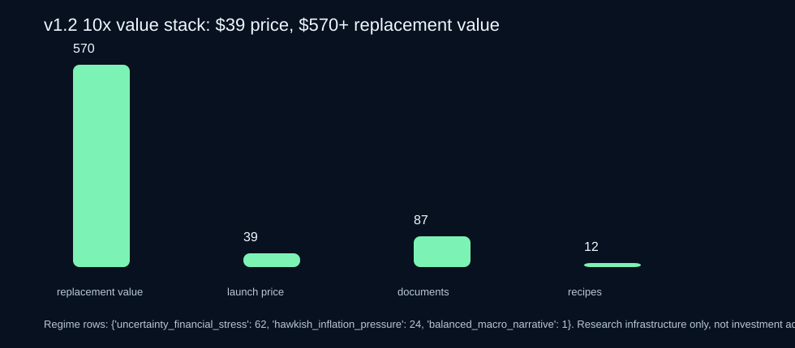

Macro Narrative 10x Research Accelerator
Price: $39. Conservative replacement value: $570+. Built to give buyers at least 10x what they pay by replacing the setup work behind public-text macro research: data cleaning, feature engineering, leakage guardrails, prompt design, memo/report templates, experiment tracking, QA, charts, and notebooks.
For macro researchers who want to test FOMC narrative ideas without burning days on source collection, HTML cleanup, schema design, feature scaffolding, and validation hygiene.
41-file paid kit87 FOMC documents$570+ value stack12 signal recipesexperiment ledgervalidation checklistno alpha promises
Get the $39 10x deal Download free sample View source manifest Read sample QA report10x value proof
Conservative replacement-value estimate across source cleaning, feature engineering, recipes, prompts, QA, templates, and notebook scaffolding.
$570 divided by the $39 launch price. The value is workflow acceleration, not performance claims.
Paid bundle files: dataset, features, recipes, playbooks, prompts, templates, examples, dashboard, QA scripts, charts, and notebooks.
What is inside the paid v1.2 accelerator
cleaned FOMC documents: 44 statements and 43 minutes.
signal recipes with feature formulas, candidate markets, and validation guardrails.
value layer: start-here guide, value stack, validation checklist, ROI calculator, experiment ledger, non-coder guide, examples, and templates.
Buyer promise
The pain
Before testing macro text ideas, researchers burn time on source discovery, HTML cleaning, date alignment, provenance notes, schemas, feature scoring, prompts, charting, leakage-safe notebook setup, and experiment tracking.
The shortcut
The v1.2 accelerator gives full cleaned text rows, source URLs, engineered feature rows, a regime timeline, signal recipes, prompt pack, QA report, proof charts, templates, example memos, mini dashboard, experiment ledger, and notebook scaffolding.
Proof charts



Paid v1.2 files
| File | Purpose |
|---|---|
START_HERE_30_MINUTES_v1_2.md | 30-minute onboarding path so buyers get value immediately. |
VALUE_STACK_10X_v1_2.md/.tsv | Explicit $570+ replacement-value stack. |
fomc_documents_v1.tsv | 87 full cleaned FOMC statement/minutes rows with date, URL, title, document type, text, counts, tags, and provenance note. |
fomc_meeting_features_v1_1.tsv | Engineered feature store: hawkish/dovish spread, inflation-labor balance, uncertainty/financial-conditions pressure, z-scores, deltas, and regimes. |
regime_timeline_v1_1.tsv | Chronological timeline for leakage-safe joining to market/economic data. |
signal_recipes_v1_1.tsv | 12 concrete research recipes with formulas, candidate markets, and validation guardrails. |
VALIDATION_CHECKLIST_v1_2.md | Leakage-safe validation checklist, including locked-OOS and risk-aware objective discipline. |
templates/experiment_ledger_template.tsv | Unified experiment tracking template for hypothesis, feature, split, metric, risk, decision, and notes. |
PROMPT_PACK_v1_2.md | LLM prompts for labeling, hypothesis generation, and red-team review. |
RESEARCH_MEMO_TEMPLATE_v1_2.md | Premium memo template for publishable research notes. |
examples/ | Example memos and a mini HTML dashboard/report template. |
macro_narrative_10x_accelerator_notebook_v1_2.ipynb | Notebook scaffold for loading, ranking, splitting, and using the value stack. |
scripts/qa_v1_2.py + ROI_CALCULATOR_v1_2.py | Buyer-verifiable QA and a simple time-saved value calculator. |
Free sample
The free sample remains available so buyers can inspect schema, source posture, and chart style before buying. The full paid kit is distributed only through Gumroad.
Download free sample v0.1 View sample rowsPrice
Macro Narrative 10x Research Accelerator v1.2
Launch deal for the full 41-file accelerator: data, feature store, recipes, playbooks, prompts, experiment ledger, examples, QA, charts, and notebooks.
Buy on GumroadFuture price path
Once demand is proven, this can become a higher-priced kit or team license with BEA/BLS/Treasury modules and richer notebooks. Current buyers get the 10x launch price.
Not investment advice
This is a research workflow/data product, not a signal guarantee, investment advice, or promise of returns. It packages auditable public text and examples so buyers can do their own research faster.